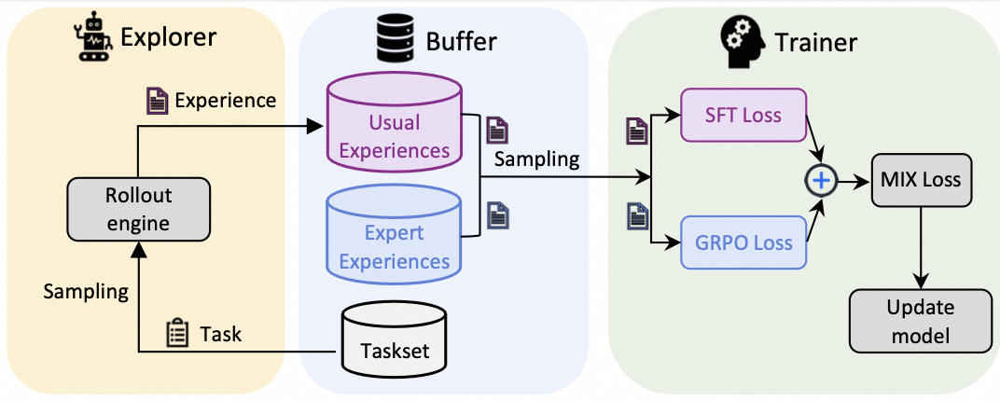

Algorithm Development
Note
This guide is an advanced version of the Algorithms section in the Developer Guide.
This guide introduces how to integrate a new algorithm to Trinity-RFT. As an example, we incorporate some “expert” data generated by a more advanced LLM and propose an algorithm named MIX , which optimizes the following policy objective:
The first term corresponds to the standard GRPO objective, which aims to maximize the expected reward. The last term is an auxiliary objective defined on expert data, encouraging the policy to imitate expert behavior. \(\mu\) is a weighting factor that controls the relative importance of the two terms.
A visualization of this pipeline is as follows:

Step 0: Prepare the Expert Data
We prompt a powerful LLM to generate responses with the CoT process for some pre-defined questions. The collected dta are viewed as some experiences from an expert. We store them in a jsonl file expert_data.jsonl with the following format:
{
"messages": [
{ "role": "system", "content": <system_prompt> },
{ "role": "user", "content": "What is the sum of 4 and 12?" },
{ "role": "assistant", "content": "<think>thinking process...</think>\n<answer>16</answer>" } ]
},
...
The path to expert data is passed to buffer.trainer_input.sft_warmup_dataset for later use.
Step 1: Define the Algorithm
In trinity/algorithm/algorithm.py, we introduce a new algorithm type MIX.
@ALGORITHM_TYPE.register_module("mix")
class MIXAlgorithm(AlgorithmType):
"""MIX algorithm."""
use_critic: bool = False
use_reference: bool = True
compute_advantage_in_trainer: bool = False
can_balance_batch: bool = True
schema: str = "experience"
@classmethod
def default_config(cls) -> Dict:
return {
"repeat_times": 8,
"advantage_fn": "grpo",
"policy_loss_fn": "mix",
"sample_strategy": "mix",
}
Step 2: Define the Sampling Strategy
We need to read two kinds of experiences: usual experiences and expert experiences in each step. For this purpose, we define a new experience sampling strategy named MixSampleStrategy.
class MixSampleStrategy(SampleStrategy):
"""The default sample strategy."""
def __init__(self, buffer_config: BufferConfig, **kwargs):
super().__init__(buffer_config)
self.expert_data_ratio = kwargs.get("expert_data_ratio", 0.5)
tot_batch_size = buffer_config.train_batch_size
expert_batch_size = ceil(self.expert_data_ratio * tot_batch_size)
# experience buffer
usual_buffer_config = copy.deepcopy(buffer_config)
usual_buffer_config.train_batch_size = tot_batch_size - expert_batch_size
self.usual_exp_buffer = get_buffer_reader(
buffer_config.trainer_input.experience_buffer, usual_buffer_config # type: ignore
)
if buffer_config.trainer_input.sft_warmup_dataset is None:
raise ValueError(
"`buffer_config.trainer_input.sft_warmup_dataset` is required in MIX algorithm"
)
# expert experience buffer
expert_buffer_config = copy.deepcopy(buffer_config)
expert_buffer_config.train_batch_size = expert_batch_size
self.expert_exp_buffer = get_buffer_reader(
buffer_config.trainer_input.sft_warmup_dataset, expert_buffer_config
)
def sample(self, step: int) -> Tuple[Experiences, Dict, List]:
metrics = {}
with Timer(metrics, "read_time"):
usual_exp_list = self.usual_exp_buffer.read()
for exp in usual_exp_list:
if exp.info is None:
exp.info = {}
exp.info["is_expert"] = False
expert_exp_list = self.expert_exp_buffer.read()
for exp in expert_exp_list:
exp.reward = 0.0
exp.logprobs = torch.zeros_like(
exp.tokens[exp.prompt_length :], dtype=torch.float32
)
if exp.info is None:
exp.info = {}
exp.info["is_expert"] = True
exp_list = usual_exp_list + expert_exp_list
repr_samples = representative_sample(exp_list)
with Timer(metrics, "gather_time"):
exps = Experiences.gather_experiences(
experiences=exp_list,
pad_token_id=self.pad_token_id, # type: ignore [arg-type]
custom_fields=[
CustomField(
source_field="is_expert",
destination_field="expert_mask",
data_type=torch.bool,
)
],
) # type: ignore
return exps, metrics, repr_samples
Here we use the custom_fields argument of Experiences.gather_experiences to add a new field expert_mask, which indicates whether the experience is from an expert or not. This field will be used in the policy loss function to distinguish between usual and expert experiences.
Step 3: Define the Policy Loss Function
We define a MixPolicyLoss class in trinity/algorithm/policy_loss_fn/mix_policy_loss.py, which computes the sum of two loss terms regarding usual and expert experiences, respectively.
@POLICY_LOSS_FN.register_module("mix")
class MIXPolicyLossFn(PolicyLossFn):
def __init__(
self,
backend: str = "verl",
mu: float = 0.1,
clip_range: Optional[float] = None,
clip_range_low: Optional[float] = None,
clip_range_high: Optional[float] = None,
use_dynamic_bsz: Optional[bool] = None,
ppo_mini_batch_size: int = 1,
ppo_micro_batch_size_per_gpu: int = 1,
ngpus_trainer: int = 1,
train_batch_size_usual: int = 1,
train_batch_size_expert: int = 1,
use_token_level_loss_in_sft: bool = True,
) -> None:
super().__init__(backend=backend)
self.mu = mu
self.use_dynamic_bsz = use_dynamic_bsz
self.experience_per_gpu = ppo_mini_batch_size // ngpus_trainer
self.gradient_accumulation = ppo_mini_batch_size // ppo_micro_batch_size_per_gpu
self.train_batch_size_usual = train_batch_size_usual
self.train_batch_size_expert = train_batch_size_expert
self.grpo_loss_fn = PPOPolicyLossFn(
clip_range=clip_range,
clip_range_low=clip_range_low,
clip_range_high=clip_range_high,
)
self.sft_loss_fn = SFTLossFn(use_token_level_loss=use_token_level_loss_in_sft)
def __call__( # type: ignore
self,
logprob: torch.Tensor,
old_logprob: torch.Tensor,
action_mask: torch.Tensor,
advantages: torch.Tensor,
expert_mask: torch.Tensor,
**kwargs,
) -> Tuple[torch.Tensor, Dict]:
assert (
len(expert_mask) == logprob.shape[0]
), f"Error: {len(expert_mask)=} != {logprob.shape[0]=}"
n_usual_exp = torch.sum(~expert_mask).item()
n_expert_exp = torch.sum(expert_mask).item()
if self.use_dynamic_bsz:
per_micro_batch_weight_usual = self.experience_per_gpu / (
logprob.shape[0] * self.train_batch_size_usual
)
per_micro_batch_weight_expert = self.experience_per_gpu / (
logprob.shape[0] * self.train_batch_size_expert
)
else:
per_micro_batch_weight_usual = self.gradient_accumulation / self.train_batch_size_usual # type: ignore
per_micro_batch_weight_expert = self.gradient_accumulation / self.train_batch_size_expert # type: ignore
if n_usual_exp > 0:
grpo_loss, grpo_metrics = self.grpo_loss_fn(
logprob[~expert_mask],
old_logprob[~expert_mask],
action_mask[~expert_mask],
advantages[~expert_mask],
**kwargs,
)
grpo_loss = grpo_loss * n_usual_exp * per_micro_batch_weight_usual
grpo_metrics = {
k: v * n_usual_exp * per_micro_batch_weight_usual for k, v in grpo_metrics.items()
}
else:
grpo_loss = torch.tensor(0.0, device=logprob.device)
grpo_metrics = {}
# SFT Loss (expert)
if n_expert_exp > 0:
sft_loss, sft_metrics = self.sft_loss_fn(
logprob[expert_mask],
action_mask[expert_mask],
)
sft_loss = sft_loss * n_expert_exp * per_micro_batch_weight_expert
sft_metrics = {
k: v * n_expert_exp * per_micro_batch_weight_expert for k, v in sft_metrics.items()
}
else:
sft_loss = torch.tensor(0.0, device=logprob.device)
sft_metrics = {}
loss = (1 - self.mu) * grpo_loss + self.mu * sft_loss
metrics = {f"usual/{k}": v for k, v in grpo_metrics.items()}
metrics.update({f"expert/{k}": v for k, v in sft_metrics.items()})
metrics.update({"loss": loss.item()})
return loss, metrics
@classmethod
def default_args(cls) -> Dict:
return {
"mu": 0.1,
"clip_range": 0.2,
}
Step 4: Run the Experiment
With the above newly-defined classes and functions, we can run the experiments without modifying other process.
An example showing some important configurations is shown below, including the weighting factor \(\mu\) as algorithm.policy_loss_fn_args['mu'] and the batch size of expert experiences \(B'\), calculated as the product of buffer.batch_size, algorithm.sample_strategy_args['expert_data_ratio'] and algorithm.repeat_times.
For the full configuration, please refer to mix_math.yaml and train_mix_math.yaml.
algorithm:
algorithm_type: mix
repeat_times: 8
sample_strategy_args:
expert_data_ratio: 0.25
policy_loss_fn_args:
mu: 0.1
clip_range: 0.2
use_token_level_loss_in_sft: False
use_dynamic_bsz: False
repeat_times: 8
ppo_mini_batch_size: 256
ppo_micro_batch_size_per_gpu: 4
ngpus_trainer: 4
train_batch_size_expert: 64
train_batch_size_usual: 192
With the above configurations, the experiment can be run with the following command:
trinity run --config examples/mix_math/mix_math.yaml